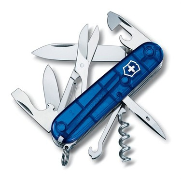
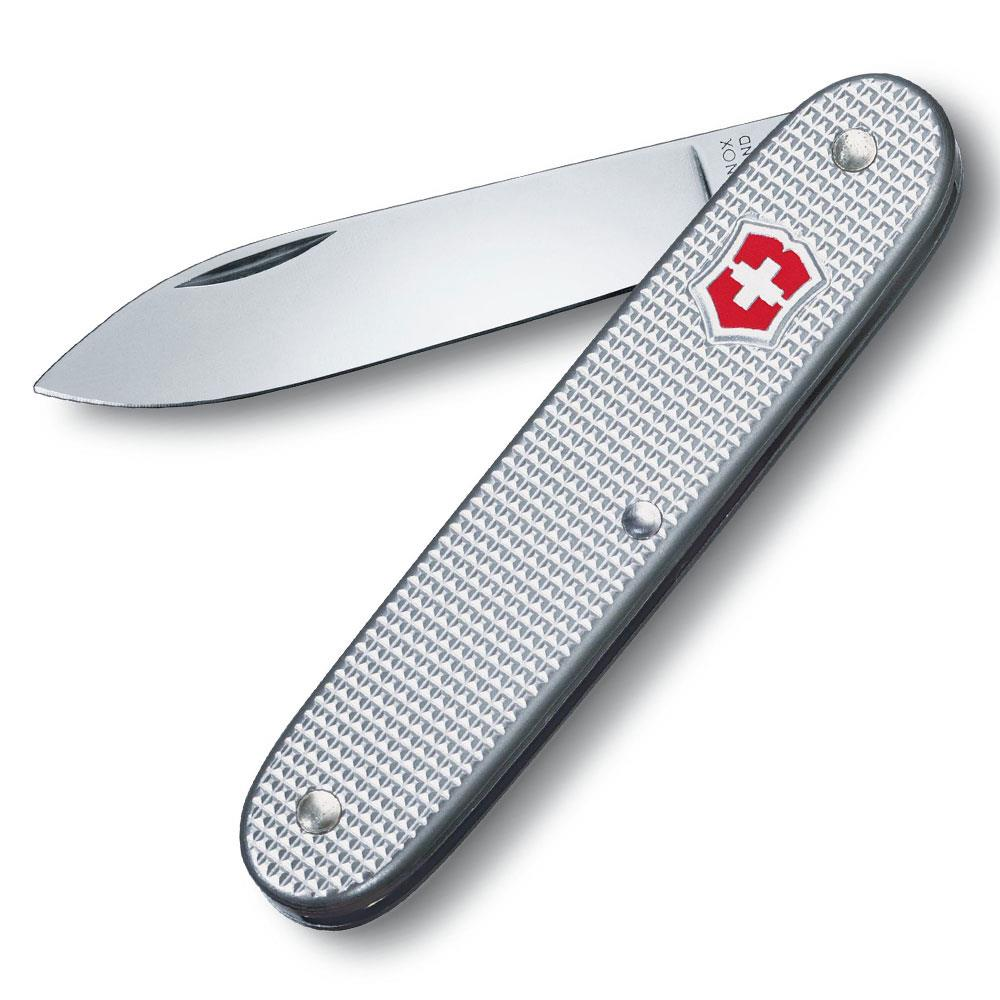
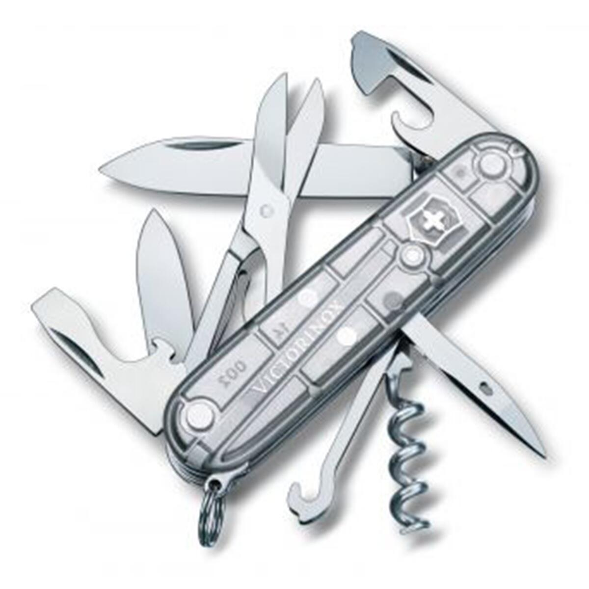

Victorinox Hiker 1.4613
13 fonksiyonlu İsviçre üretimi çakı. İçerisinde anahtarlık halkası,büyük bıçak,cımbız,delik açıcı ,kablo sıyırıcı ,konserve açacağı ile küçük bıçak,kürdan,küçük tornavida, testere,tornavida, şişe açacağı, ve yıldız tornavida bulunmaktadır.1.539 TL

Victorinox Climber Çakı
14 fonksiyonlu İsviçre üretimi çakı. İçerisinde büyük bıçak, küçük bıçak, tirbüşon, konserve açacağı ile küçük tornavida, kapak açacağı, tornavida, kablo sıyıracağı, delme bıçağı, halka, cımbız, kürdan, makas ve çok maksatlı askı bulunmaktadır.1.580,15 TL

Victorinox Çakı Alüminyum Yüzeyli
Tek fonskiyonlu İsviçre üretimi çakı. Ağırlığı 44 gr, uzunluğu 93 mm, genişliği 23 mm ve yüksekliği de 9 mm dir.1.219,00 TL

Victorinox Silvertech Şeffaf Blisterli Çakı
14 fonksiyonlu İsviçre üretimi çakı. İçerisinde anahtarlık, büyük bıçak, cımbız, çok amaçlı kanca, delik açıcı, kablo sıyırıcı, konseve açacağı, küçük bıçak, tornavida 3mm, tornavida 6mm, kürdan, makas, şişe açacağı ve tirbüşon bulunmaktadır..2.700,00 TL